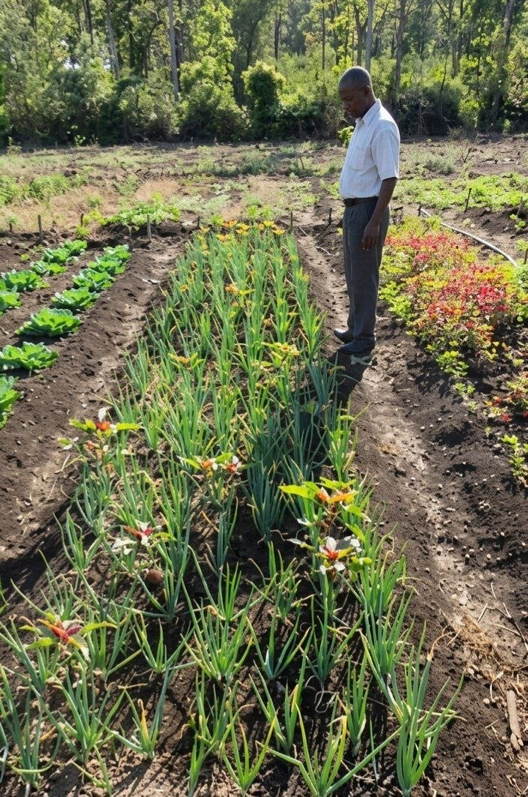
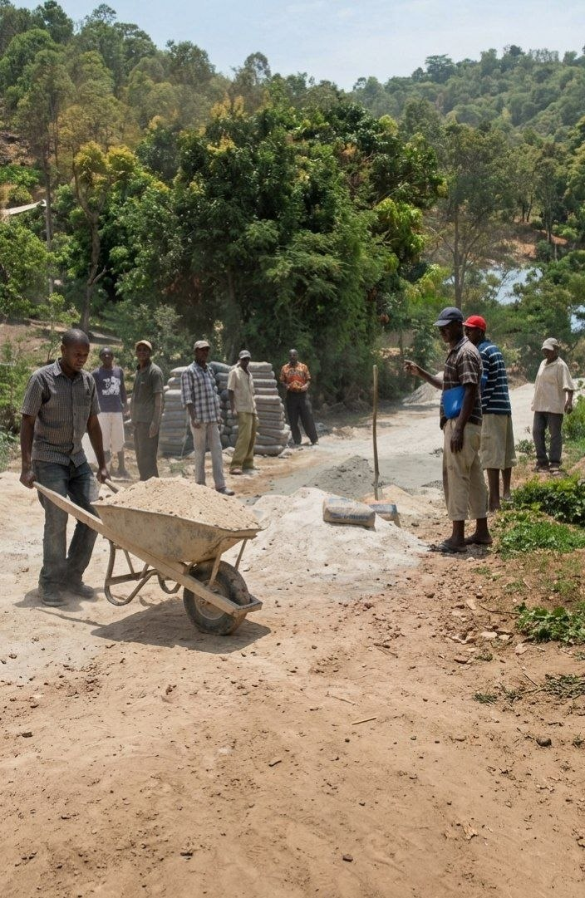

L'Institution de Référence à La Gonâve
Gonâve Espoir de Demain
Fondée le 12 Septembre 1997, GED n'est pas simplement une organisation, c'est l'expression d'une volonté collective de transformation sociale. Nous agissons comme le pivot central du développement durable sur l'île, fusionnant expertise technique et engagement citoyen pour bâtir une souveraineté réelle.
Gonâve Espoir de Demain
Founded on September 12, 1997, GED is more than an organization; it is the expression of a collective will for social transformation. We act as the central pivot of sustainable development on the island, merging technical expertise and civic engagement to build real sovereignty.
Notre Parcours Historique
Our Historical Journey
-
2006 Coordination du reboisement avec APLAG Reforestation coordination with APLAG
-
2012 Collaboration avec la Fondation Culture & Récréation (Financé par Fondation de France) Work with Fondation Culture & Récréation (Funded by Fondation de France)
-
2012 Projet de conservation de sol avec la Mairie Soil conservation project with the Town Hall




L'Héritage et la Vision d'Alfred Dieuseul
L'aventure GED a débuté sous l'impulsion d'Alfred Dieuseul, dont la motivation transcendait la simple charité. En 1997, il a identifié l'autosuffisance comme l'unique remède au déclin économique de La Gonâve. Son ambition était de créer un rempart institutionnel capable de protéger non seulement l'environnement, mais aussi la dignité des générations futures. Ce leadership visionnaire a transformé une petite initiative locale en un moteur de développement reconnu à l'échelle nationale pour sa rigueur et son impact durable.
25+
Années d'expérience
Years of experience
2006
Premier grand reboisement
First major reforestation
Haití
Reconnu d'Utilité Publique
Public Utility Status
Notre Mission
Our Mission
Restaurer l'environnement et assurer le bien-être des professionnels et des enfants de La Gonâve.
Restoring the environment and ensuring the well-being of professionals and children in La Gonâve.
Nos Valeurs
Our Values
Solidarité, leadership local, et développement durable pour les générations futures.
Solidarity, local leadership, and sustainable development for future generations[cite: 4, 5].
The GED journey began under the leadership of Alfred Dieuseul, whose motivation transcended simple charity. In 1997, he identified self-sufficiency as the only remedy for the economic decline of La Gonâve. His ambition was to create an institutional bulwark capable of protecting not only the environment but also the dignity of future generations. This visionary leadership transformed a small local initiative into a development engine recognized nationwide for its rigor and lasting impact.
Partenaires & Collaborations
Partners & Collaborations
L'Union pour un Avenir Meilleur
"L'essence même de GED réside dans la collaboration. Mon ambition a toujours été de créer un pont entre toutes les organisations en Haïti pour répondre aux besoins réels du peuple et bâtir, ensemble, un lendemain plus digne."
— Alfred Dieuseul, Fondateur
Unity for a Better Future
"The very essence of GED lies in collaboration. My ambition has always been to create a bridge between all organizations in Haiti to respond to the real needs of the people and build, together, a more dignified tomorrow."
— Alfred Dieuseul, Founder
La Mobilisation Radicale des Citoyens
La mobilisation citoyenne est le premier levier de notre action. GED ne travaille pas pour la communauté, mais avec elle. Nous activons des processus de participation où chaque habitant devient un architecte du changement. Cette approche garantit que chaque projet répond à des besoins réels identifiés sur le terrain. En transformant le spectateur en acteur, nous renforçons le tissu social et assurons la pérennité de chaque intervention grâce à un sentiment d'appartenance collective indéfectible.
Citizen mobilization is the primary lever of our action. GED does not work for the community, but with it. We activate participation processes where every inhabitant becomes an architect of change. This approach ensures that every project responds to real needs identified on the ground. By transforming the spectator into an actor, we strengthen the social fabric and ensure the sustainability of every intervention through an unwavering sense of collective belonging.
La Restauration des Écosystèmes et Bassins Versants
Depuis 2006, la gestion des ressources naturelles est au cœur de notre stratégie de résilience. GED combat l'érosion par des techniques d'ingénierie naturelle et des programmes de reboisement massif. En stabilisant les bassins versants, nous protégeons les plaines fertiles de l'île contre les inondations dévastatrices. Chaque arbre planté et chaque terrasse construite constituent une barrière physique contre la précarité alimentaire, transformant un paysage dégradé en une ressource productive pour toute la population gonâvienne.
Résilience Écologique
Ecological Resilience
Protection des ressources naturelles, lutte contre l'érosion et reboisement stratégique[cite: 4, 5].
Protection of natural resources, erosion control, and strategic reforestation[cite: 4, 5].
Économie Locale
Local Economy
Soutien aux mutuelles de solidarité et aux petits business communautaires[cite: 5].
Support for solidarity mutuals and small community businesses.
Gestion des Risques
Risk Management
Préparation aux catastrophes naturelles et réponse rapide en cas de crise[cite: 6].
Natural disaster preparedness and rapid response during crises.
Since 2006, natural resource management has been at the core of our resilience strategy. GED fights erosion through natural engineering techniques and massive reforestation programs. By stabilizing watersheds, we protect the island's fertile plains from devastating floods. Every tree planted and every terrace built constitutes a physical barrier against food insecurity, transforming a degraded landscape into a productive resource for the entire Gonavian population.
Un Engagement Reconnu
A Recognized Commitment
Reconnaissance Officielle
Official Recognition
Reconnu d'utilité publique par le Ministère des Affaires Sociales et du Travail.
Recognized as a public utility by the Ministry of Social Affairs and Labor.
Ancrage Local
Local Roots
Collaboration stratégique avec la Mairie comme partenaire privilégié.
Strategic collaboration with the Town Hall as a key partner.
Inclusion & Genre
Inclusion & Gender
Partenariat actif avec l'Association des Femmes Vaillantes (AVAR).
Active partnership with the Association of Brave Women (AVAR).
Ensemble pour l'avenir de demain
Comme le dit notre fondateur, notre porte est ouverte à toutes les organisations pour bâtir une Haïti souveraine et résiliente.
Devenir PartenaireTogether for tomorrow's future
As our founder says, our door is open to all organizations to build a sovereign and resilient Haiti.
Become a Partner